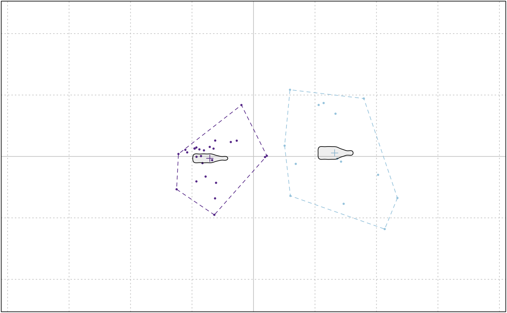

A very basic implementation of k-means. Beware that morphospaces are calculated so far for the 1st and 2nd component.
KMEANS(x, ...) # S3 method for PCA KMEANS(x, centers, nax = 1:2, pch = 20, cex = 0.5, ...)
| x | PCA object |
|---|---|
| ... | additional arguments to be passed to kmeans |
| centers | numeric number of centers |
| nax | numeric the range of PC components to use (1:2 by default) |
| pch | to draw the points |
| cex | to draw the points |
the same thing as kmeans
Other multivariate: CLUST,
KMEDOIDS, LDA,
MANOVA_PW, MANOVA,
MDS, MSHAPES,
NMDS, PCA,
classification_metrics
#>KMEANS(bp, 2)#> K-means clustering with 2 clusters of sizes 26, 14 #> #> Cluster means: #> PC1 PC2 #> 1 -0.04036460 -0.001738792 #> 2 0.07496282 0.003229186 #> #> Clustering vector: #> brahma caney chimay corona deusventrue #> 1 1 2 1 1 #> duvel franziskaner grimbergen guiness hoegardeen #> 2 1 2 1 1 #> jupiler kingfisher latrappe lindemanskriek nicechouffe #> 1 1 2 1 1 #> pecheresse sierranevada tanglefoot tauro westmalle #> 1 2 2 1 1 #> amrut ballantines bushmills chivas dalmore #> 1 2 1 2 2 #> famousgrouse glendronach glenmorangie highlandpark jackdaniels #> 1 1 1 2 1 #> jb johnniewalker magallan makersmark oban #> 1 1 1 2 1 #> oldpotrero redbreast tamdhu wildturkey yoichi #> 2 2 1 1 2 #> #> Within cluster sum of squares by cluster: #> [1] 0.02127484 0.03758606 #> (between_SS / total_SS = 67.3 %) #> #> Available components: #> #> [1] "cluster" "centers" "totss" "withinss" "tot.withinss" #> [6] "betweenss" "size" "iter" "ifault"